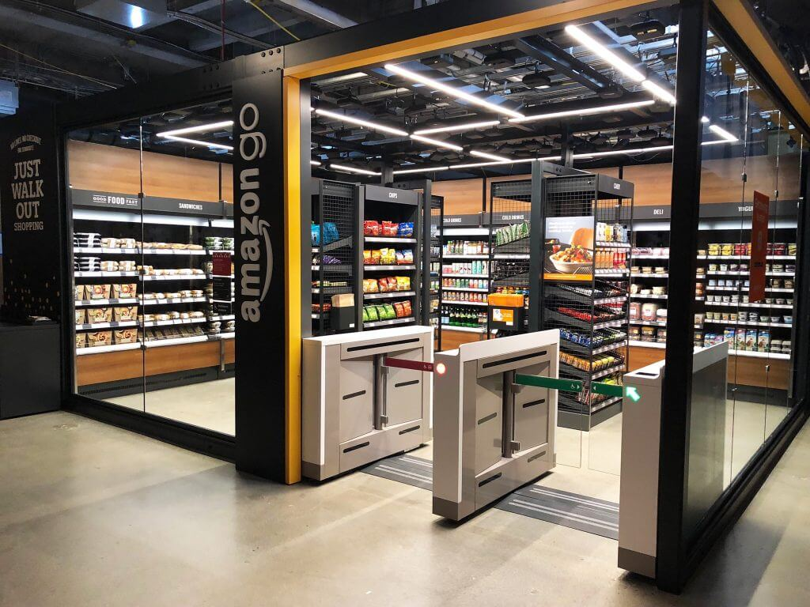
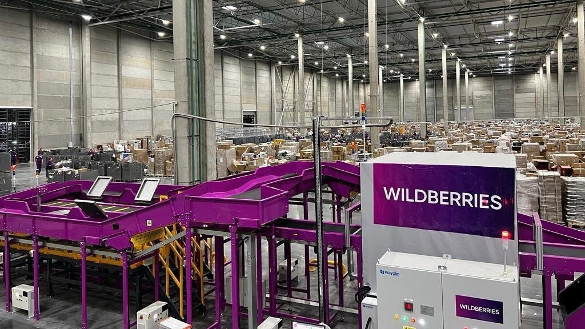
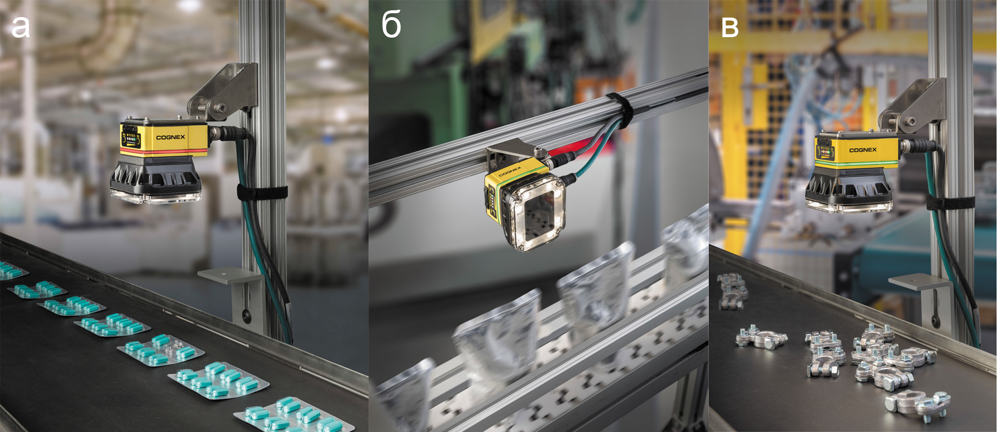
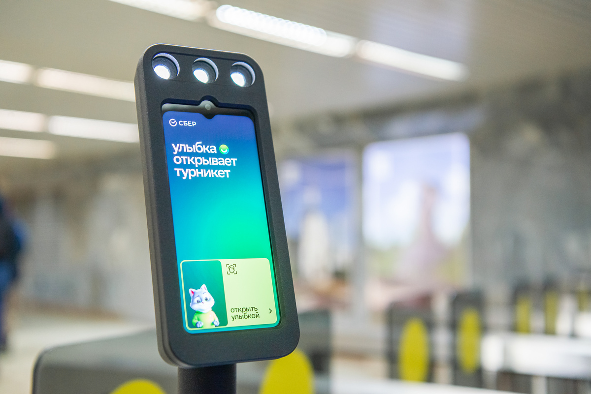
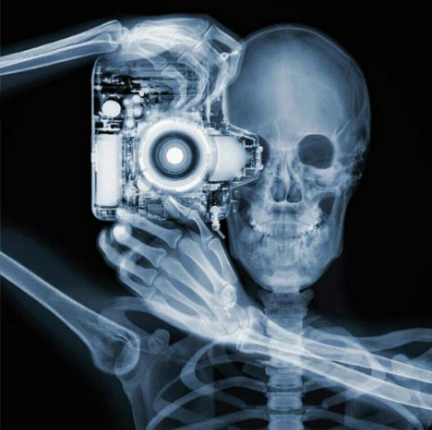

1. Розничная торговля
Amazon Go - магазины без касс
Система использует:
- Массивы камер 360° для отслеживания покупателей
- Датчики веса на полках
- Алгоритмы YOLOv5 для распознавания товаров
Результат: сокращение времени оплаты на 90%, уменьшение краж на 65%.
2. Логистика и склады
Системы сортировки Wildberries
Технологии:
- 3D-сканирование посылок
- Распознавание штрих-кодов в движении (до 2000 ед./час)
- Оптимизация маршрутов погрузчиков
Эффект: обработка заказов в 3 раза быстрее ручного метода.
3. Промышленность
Контроль качества на автозаводах
Решения:
- Камеры 8K с ИК-подсветкой
- Нейросети для обнаружения микротрещин (точность 99.7%)
- AR-интерфейсы для операторов
Итог: снижение брака на 40%, экономия $2.5 млн в год на одном заводе.
4. Финансы и безопасность
Биометрическая идентификация в Сбербанке
Используется:
- Распознавание лиц (FaceNet)
- Анализ поведения клиентов
- Обнаружение подозрительных действий
Результаты: предотвращение мошенничества на ₽1.2 млрд в 2024 году.
5. Медицинские приложения
Диагностика в сети клиник "Инвитро"
Технологический стек:
- Анализ рентгеновских снимков (точность 98.5%)
- Прогнозирование заболеваний по сетчатке глаза
- Автоматизация лабораторных исследований
Эффективность: скорость диагностики увеличена в 5 раз.